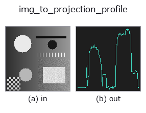

bridge op• 데이터 종류: image → signal
• 호출: fullseye.apply(img, "img_to_projection_profile", a=0.5, b=0.5)(2-D 는 이미지 1 장 + 스칼라 노브 2 개 a,b∈[0,1] 모델)

*그림은 128×128 합성 입력에서 실제로 실행한 출력. 왼쪽이 입력, 오른쪽이 출력. 점군은 위에서 본 산점도(밝기 = z), 1-D 열은 꺾은선, 볼륨은 z 방향 최대값 투영, 동영상은 가운데 프레임, 복소 영상은 진폭이며, 그림이 되지 않는 반환값은 값 자체를 표시한다.*
노브 a 를 훑기(0.1 / 0.5 / 0.9, 다른 노브는 기본값):
▸ img_to_projection_profile: knob a sweep (docs site)
노브 b 를 훑기(0.1 / 0.5 / 0.9, 다른 노브는 기본값):
▸ img_to_projection_profile: knob b sweep (docs site)
다른 영상에서도(합성 장면 / 사진 / 동전. 윗줄이 입력, 아랫줄이 그 출력. 노브는 기본값):
▸ img_to_projection_profile: other inputs (docs site)
*4열은 컬러 (H,W,3) 입력. 이 op는 채널을 넘나들지 않고 컬러를 다룰 수 있다(색 채널을 세 번째 공간축으로 컨볼루션하지 않음).*
> 이 연산자의 설명은 아직 번역이 없습니다. 원문을 그대로 싣습니다.
画像を 1 方向へ潰した射影プロファイルを 1-D の signal にする ―― 版面解析の基本量。
`img_to_signal` が「1 本の行/列をそのまま読む」のに対し、こちらは**全行(全列)を
束ねて 1 本にまとめる**。文字列の切れ目・罫線・帯の境目は、1 本の走査線では雑音に
埋もれるが、潰すと谷として立ち上がる。
• `b → 向き。b < 0.5` で縦に潰して長さ W(列ごとの代表値。横に並んだ字の
切れ目が谷になる)、`b >= 0.5` で横に潰して長さ H(行ごと。行間が谷になる)。
`img_to_signal と同じく b が向きを決めるが、a` の意味は違う。
• `a` → 上側トリム率。潰す軸の値を大きい順に並べ、上位
`m = max(1, round((1-a) * N)) 個だけを平均する。a=0` はただの平均射影
(古典的な projection profile そのもの)、`a=1` は最大値射影(MIP)、
その間は「外れ値だけを残して均す」連続的な折衷になる。
• 返り値: 1-D float64。正規化しない(値域は入力のまま。[0,1] の画像なら [0,1])。
長さは向きで決まる(W または H)。空フレームは一定値の列になる。
なぜノブがトリム率なのか: 平均射影は雑音に強いが、細い線 1 本が背景に薄められて
消える。最大値射影は細い線を残すが、輝点 1 個で列全体が持ち上がる。どちらを選んでも
失うものがあるので、どれだけ捨てるかをノブにして取引を明示した。`a` を上げると
細い構造が残り、下げると雑音が均される ―― 単調で、両端が古典的な 2 つの射影に一致する。
暗い字には前段で反転を。この op は大きい方を残すので、白地に黒字のまま渡すと
トリムが背景を拾う。`invert(台帳)を挟めば、a` が「濃い字のところ」を残す。
先行と対応: 平均射影は文書解析の古典そのもの(Postl 1986 / Baird 1987 が傾き
推定に使った量)で、HALCON では `gray_projections`(水平・垂直の濃淡射影)に
あたる —— 対応表で **covered: false** だった op を、これが埋める。上位トリムで
最大値射影へ連続に寄せる族は、蛍光顕微鏡の時間フレーム融合で使われる
分位点射影(上側 75 % 点を取る)と同じ発想だが、こちらは上位 m 個の平均
なので 両端が厳密に平均射影と最大値射影に一致し、その間が単調になる。
使いどころ: 行の切り出し(横に潰して谷を探す)、字の切り出し(縦に潰す)、罫線検出、
帯の境目、`deskew` が内部で使っている判定量の可視化。下流は 1-D 関数の族
(`tb_smooth_funct_1d_gauss / tb_local_min_funct_1d / tb_derivate_funct_1d`)。
• 샘플 데이터 카탈로그(DL URL / 라이선스) —— 2-D 는 skimage.data(BSD/public)+ 합성, 3-D 는 실데이터 소스(Stanford/PDS 등)의 DL URL.
• 연산자의 내력·참고문헌 —— 이 연산자 족의 바탕이 된 연구/기법의 출처.
• 알고리즘의 정전(저자·연도)과 용도는 위의 패밀리 사용 가이드에 적혀 있습니다.
아래 프로그램은 실제로 실행됨을 확인했습니다(그림과 같은 입력). Studio 도움말에서는 이 블록이 버튼이 되어 즉시 불러와 실행할 수 있습니다.
img_to_projection_profile 0.50 0.50
▸ Load this pipeline · Load & run
• gallery2d_bridge — py -3.11 examples/gallery2d_bridge.py
signal 를 입력으로 받는 것)identity · tb_create_funct_1d_array · tb_smooth_funct_1d_gauss · tb_smooth_funct_1d_mean · tb_derivate_funct_1d · tb_integrate_funct_1d · tb_zero_crossings_funct_1d · tb_abs_funct_1d
bridge)img_to_points · img_to_keypoints · img_to_signal · img_to_counts · img_to_matrix · img_to_video · img_to_volume · img_to_lightfield
*Provenance: ops.py — 2D 연산자 레지스트리. 이 op 노트는 tools/opdocs.py md 가 자동 생성합니다(직접 편집하지 마세요).*
© 2026 Kazufumi Furuse — Fullseye operator documentation. Licensed under Apache-2.0.
{kind=link}
{kind=link}
{kind=link}